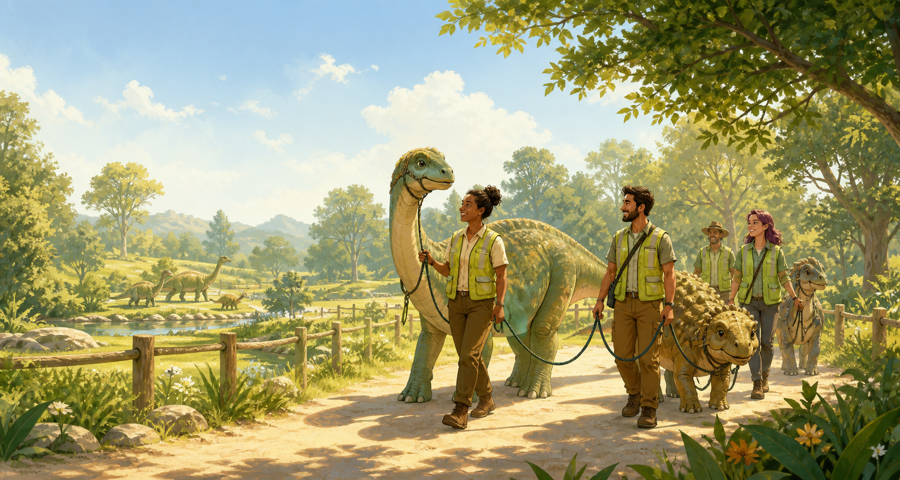

Walk
Join a supervised walking roster and help a dinosaur enjoy exercise, sniffing time, and enrichment.
Walk a dinosaur
Gentle giants need good neighbours
Help our fictional sanctuary keep every bronto, ankly and tiny raptor-hopper active, enriched, and ready for calm community life.
Canberra-inspired, completely fictional
Dinosaur Pangaea pairs trained volunteers with carefully matched dinosaurs for supervised walks through padded paths, fern gardens, and quiet morning circuits. Every outing is designed around temperament, size, weather, and the walker's confidence level.
Join a supervised walking roster and help a dinosaur enjoy exercise, sniffing time, and enrichment.
Walk a dinosaurOffer a temporary paddock, quiet garage bay, or fern-safe courtyard to a dinosaur between placements.
Become a foster carerMeet fictional dinosaurs looking for long-term homes with patient people and reinforced garden gates.
View dinosaursVolunteer snapshot
Ready to help?
Fill out the fictional interest form and we will match you with training, a walking group, and a dinosaur whose pace suits yours.